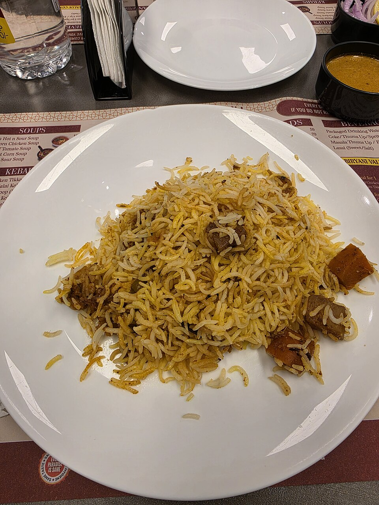
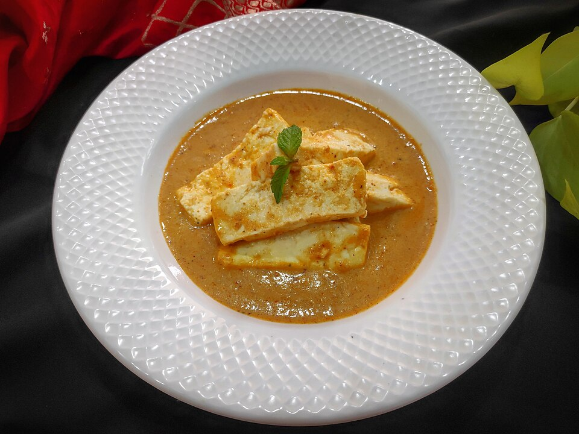
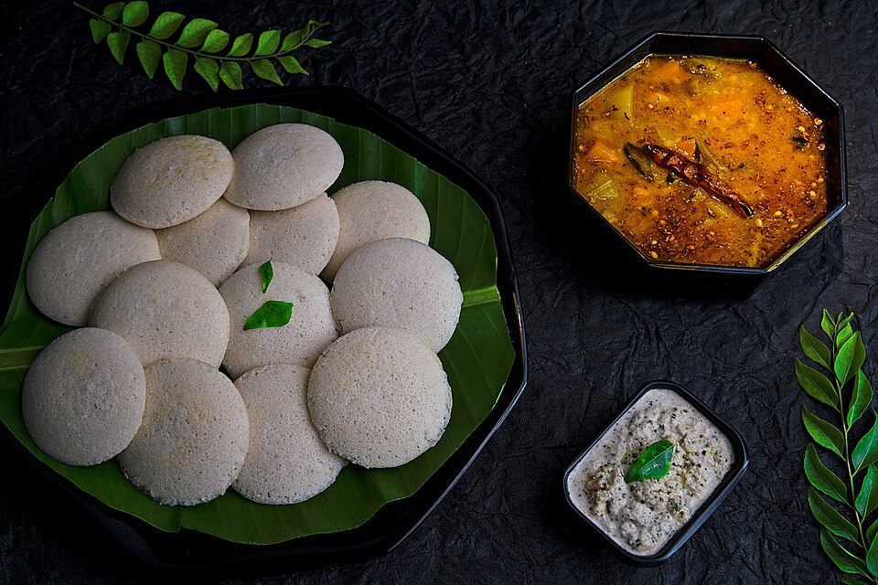
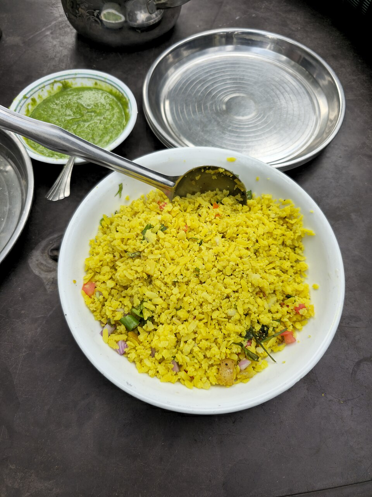
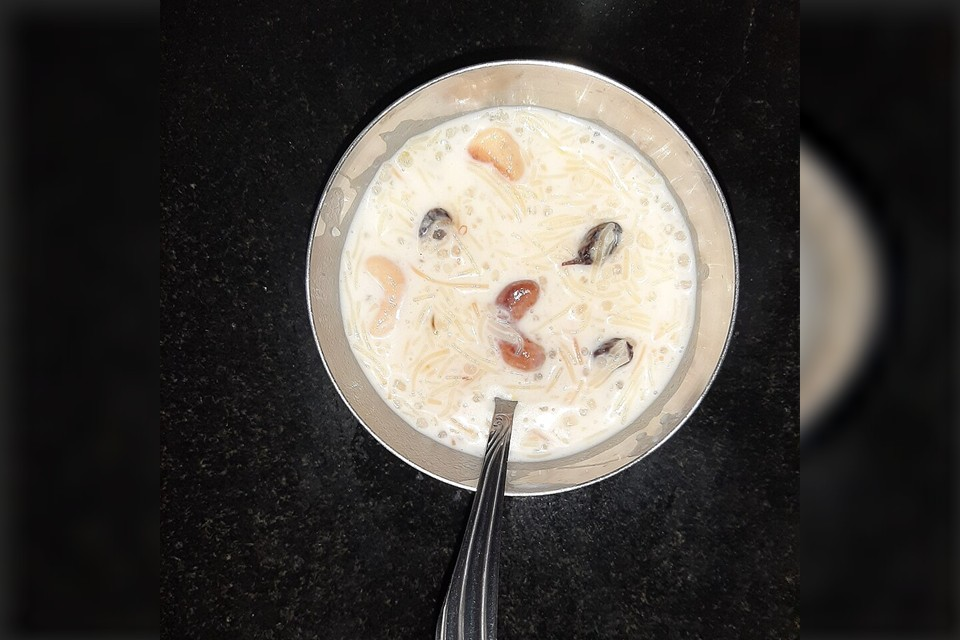
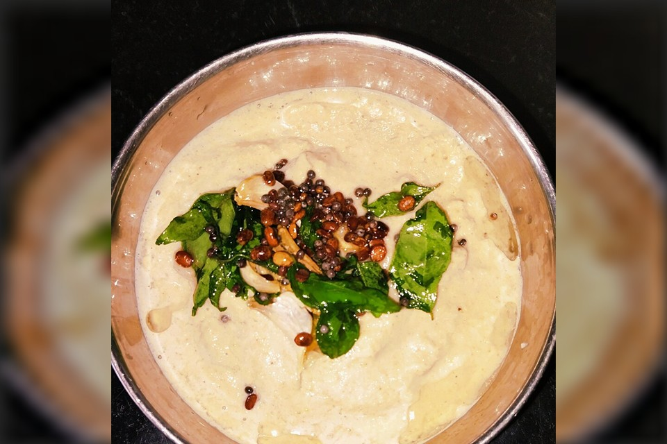

RICE & BIRYANI
Vegetable Biryani
Aromatic rice cooked with vegetables and spices.
FRESH • HOMEMADE • VEGETARIAN
Discover delicious vegetarian recipes with simple ingredients, easy steps and useful cooking tips.
Explore Recipes →Made for your family
What would you love to cook today?
EXPLORE BY CATEGORY
HANDPICKED FOR YOU
Simple ingredients. Wonderful homemade flavors.

Aromatic rice cooked with vegetables and spices.

Creamy paneer curry with rich Indian spices.

Soft steamed idlis served with flavorful sambar.

A light and tasty breakfast with flattened rice.
Crispy pastry filled with spiced potatoes.

A traditional sweet made with milk and vermicelli.
Healthy finger millet balls with cumin and fresh moringa leaves.

Roasted peanuts blended with green chillies, curry leaves and tomato.
WELCOME TO MY KITCHEN
Explore vegetarian recipes for everyday meals, festive occasions and family gatherings. Each recipe will include ingredients, quantities, preparation steps, cooking time and practical tips.